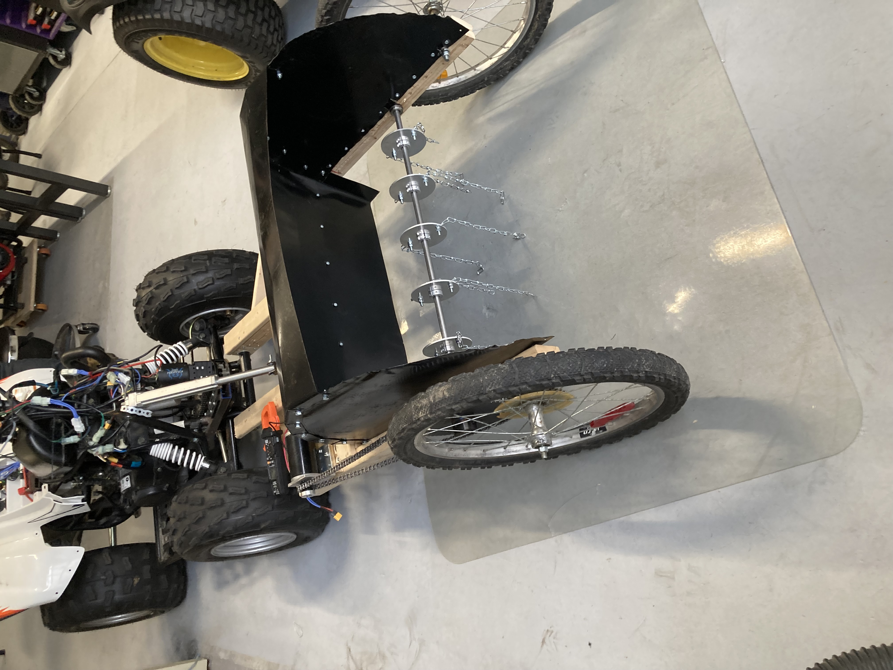
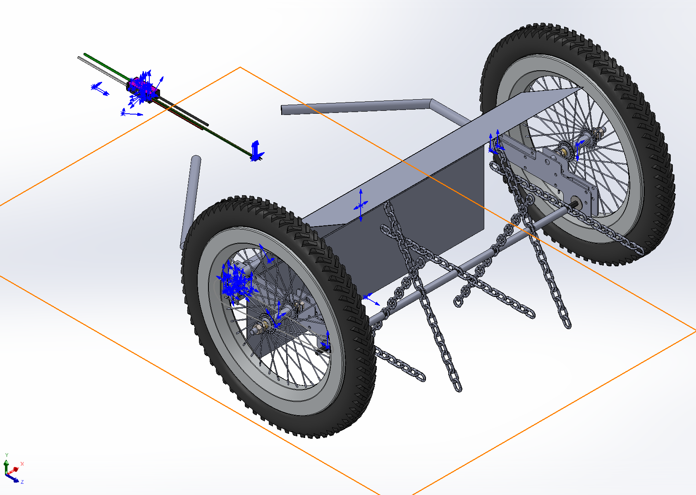

Demining Flail
2025 | Effective Prototyping / Real-world Engineering
Powered Demonstration
Deployment, spin-up, and driving.
Overview
Traditional demining equipment is costly, with most mechanical unexploded ordnance (UXO) removal handled by retrofitted armored vehicles or complex, purpose-built platforms. In areas where these tools aren't available, personnel end up clearing UXO manually with inadequate protective gear.
To tackle this, our team worked with Canadian Demining Services (CDS) to build a prototype for an inexpensive remote demining solution. By overhauling small-engine vehicles like ATVs and lawn tractors with drive-by-wire controls and custom overrides (like 3D printed servo mounts to shift gears!), we showed that a fleet of low-cost, disposable units could clear areas safely for a fraction of the cost. I was tasked with designing, building, and integrating a functional flail attachment. Spinning chain-mounted hammers at 900 RPM, the flail generates enough force to safely detonate small anti-personnel mines ahead of the vehicle. After modeling the design in SolidWorks, I tested torque needs using a hand-held scale and coiled cord, and combined that data with researched statistics to spec the drive motor and linear actuator. To handle the power draw, I installed a second lithium-ion battery in parallel and drafted complete vehicle power diagrams. Mechanical integration meant solving practical problems on the fly—like adding a custom chain-tensioner. Setting up control also meant modifying the harness connectors for additional channels (to an RF controller) and adding options to Wi-Fi comms CLI. The highlight of the project was demonstrating the working prototype to a UN delegate working on humanitarian demining.
Key Deliverables & Specs
- 900 RPM powered flail attachment
- Parallel dual-battery power distribution
Tools Used
- SolidWorks
- Drive-by-Wire systems
- Power distribution diagrams
- Dynamic testing
- Dual-channel comms (RF & Wi-Fi)
Images

